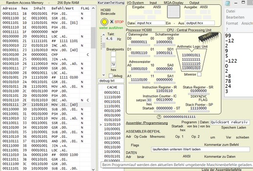

Wie funktioniert ein Prozessor?
Wie verhält es sich mit Binärcode und Assembler?
Selbst bei der
auszugsweisen Betrachtung einfacher historischer Prozessoren
bleiben für den Einsteiger Verständnislücken durch die
anfangs nicht überschaubaren Verknüpfungen des komplexen
Systems.
Das gesamte HC680-System ist in angemessener Zeit überschaubar.
-----
Die grundlegenden Bau- und Befehlsgruppen ermöglichen einen
leichten Einstieg. Die Multiplikation nach Booth (Assembler MUL)
und Division mit Rest (Assembler DIV) sind bereits etwas
komplexer. Bei deren Ausführung gibt es zusätzliche
Tooltip-Hilfen.
Die Sortierung einer kleinen Datei mit rekursivem Quicksort ist eine Antwort!
Daten des Systems
Prozessor:
HC 680 fiktiv
Verarbeitungsbreite:
8 Bit Daten und Adressen
Befehlslänge:
1Byte
Adressraum:
256 Byte
Takt:
Einzelschritt, 0,1Hz bis 255Hz, ungebremst
Register:
4 allgemeine Register mit Schattenregister, Startadresse (ST),
Befehlsregister (IR), Befehlszähler (IC), Statusregister (SR), Stapelzeiger (SP)
Flags:
Negativ (N), Null (Z), Überlauf (V), Übertrag (C)
Rechenwerk:
Arithmetik-Logik-Einheit (ALU), 8+1Bit Vorzeichenerweiterung bei Addition,
Multiplikation nach Booth, Division mit Rest, ALU bitweise darstellbar
Zahlenraum:
dezimal von -128 bis 127
Grafik:
8x8 Maxipixel-Display, 8 Byte Shared Memory
Ein- Ausgabe:
Tastaturzeichen, dezimal, hexadezimal, - Ausgabe auch binär
Dateien:
Tastaturzeichen, dezimal, hexadezimal, binär
Breakpoints:
3 - beim Programmlauf änderbar
Debug:
beliebig abschnittsweise in wählbare Datei
Assembler:
40 Mnemonics, 57 Befehle durch Adressierungsarten
Beispieldarstellung Quicksort (rekursiv) der Datei input.hcx
